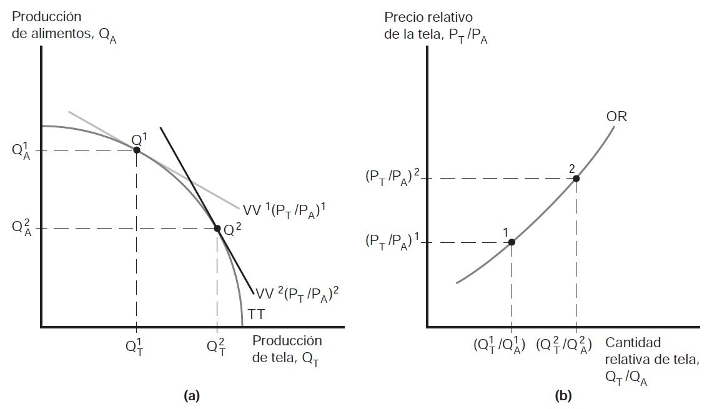
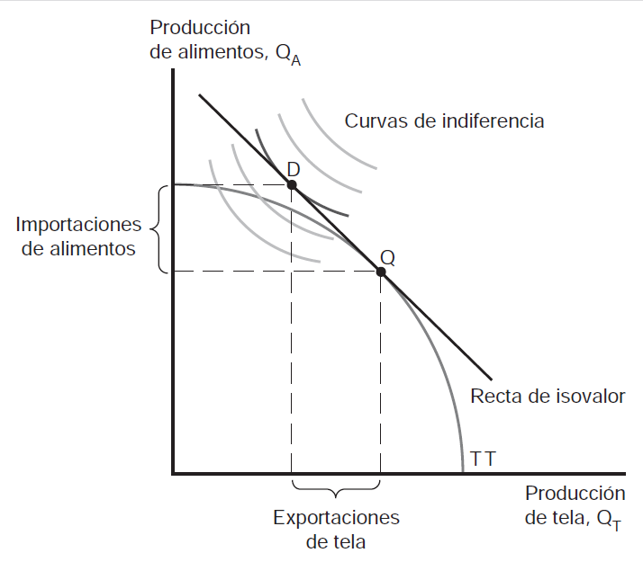
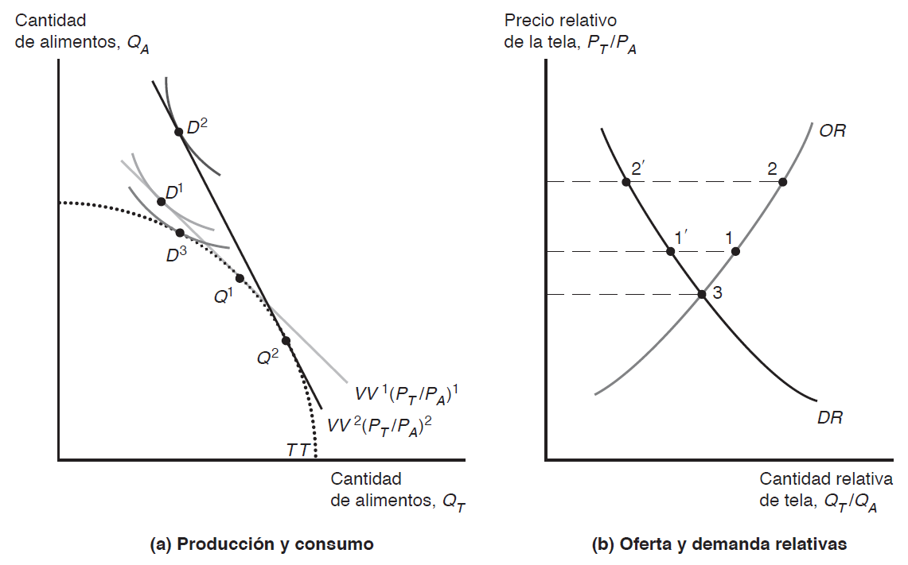
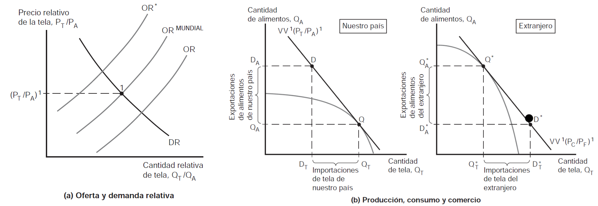
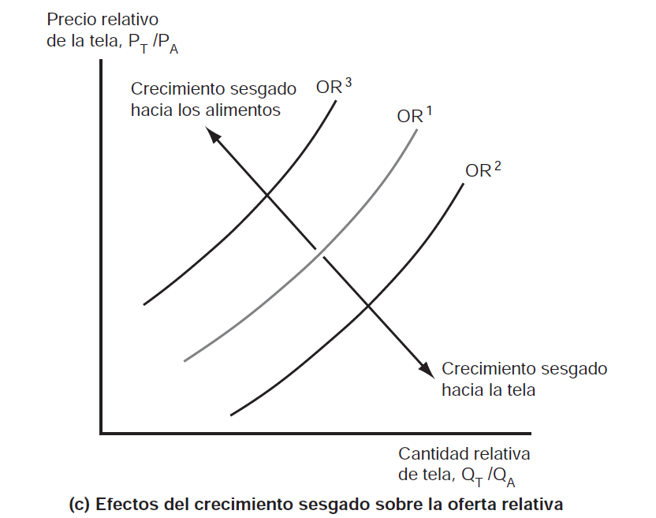
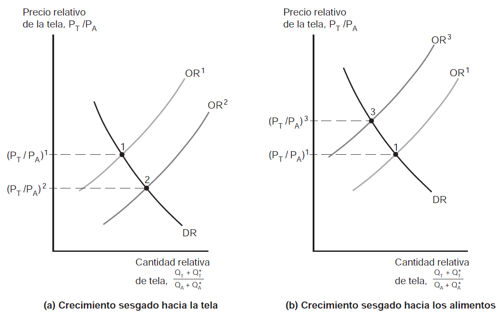

Comercio y Finanzas Internacionales [CyFI]
U4. El modelo estándar de comercio
El modelo estándar de comercio
¿Cuál modelo?
- Hasta ahora hemos visto 3 (tres) modelos distintos de comercio internacional. Difieren en supuestos y también en conclusiones. Repasemos sus características
- Modelo ricardiano \(\longrightarrow\) 1 (un) sólo factor –\(L\)-, y 2 (sectores). La asignación de \(L\) entre sectores determina la FPP. Aporta idea de ventaja comparativa pero no avanza en distribución de la renta
- Modelo factores específicos \(\longrightarrow\) 3 (tres) factores –\(L\), \(K\) y \(T\). Foco en consecuencias distributivas a corto plazo
- Modelo de Heckscher-Ohlin \(\longrightarrow\) 2 (dos) factores –\(L\), \(K\)- con libre movilidad. Diferencias en dotacion relativa determina patrón de comercio. Foco en consecuencias distributivas a largo plazo
Todos!
- Cuando analizamos problemas, solemos tomar una combinación de los mismos. Para analizar un rapido crecimiento de \(X\) de nuevos países industrializados por razones de productividad, el modelo ricardiano es util. Para analizar consecuencias distributivas, los modelos de factores específicos y H-O son más utiles que el ricardiano
- Características compartidas
- Todos parten de posibilidades de producción (FPP) –diferencias en las FPP origen del comercio
- FPP determinan funcion de OR de un país
- Equilibrio mundial determinado por cruce de DR y OR mundiales, estas ultimas situadas entre OR nacionales
Modelo general
- El modelo estándar de comercio se construye a partir de 4 (cuatro) relaciones clave
- Relación entre FPP y curva de OR
- Relación entre precios relativos y curva de DR
- Determinación de equilibrio mundial a través de OR y DR mundiales
- Efecto de la relación de intercambio –\(\frac{P_{X}}{P_{M}}\) sobre bienestar nacional
- Modelo estándar supone:
- Cada país produce 2 (dos) bienes –\(A\) y \(T\)
- FPP es una curva cóncava
Modelo general: FPP (producción) y OR

Modelo general: FPP (producción) y OR (cont.)
- La economía produce en el punto de tangencia entre FPP y el relativo de precios, \(\frac{P_{T}}{P_{A}}\). Para precios de mercado dados economía elegirá punto de producción que aumente al máximo el valor de producción –\(P_{T}Q_{T}+P_{A}Q_{A}\)
- La recta de isovalor es línea a lo largo de la cual valor de producción es constante –\(Q_{A}=\frac{V}{P_{A}}-\frac{P_{T}}{P_{A}}Q_{T}\), donde \(V\) es el valor de la producción
- Si \(\frac{P_{T}}{P_{A}}\) aumenta, recta de isovalor mayor pendiente y se produce más \(T\) y menos \(A\) \(\longrightarrow\) aumenta la OR de tela, \(T\)
Modelo general: FPP (producción) y OR (cont.)
Modelo general: precios relativos y demanda
- En una economía sin comercio, el valor de la producción debe igualar el valor del consumo –por lo tanto producción y consumo deben estar en la misma curva de isovalor
\[\begin{equation} P_{T}Q_{T}+P_{A}Q_{A}=P_{T}D_{T}+P_{A}D_{A} \end{equation}\]
- el punto de consumo depende de las preferencias de consumidores –curvas de indiferencia [supuestos de las CI]
Modelo general: precios relativos y demanda (cont.)
Modelo general: precios relativos y demanda (cont.)
- En la figura puede verse que tanto la elección de consumo como de producción están en la misma curva de isovalor (y la más alta posible) pero \(\longrightarrow\) la economía exporta \(T\) e importa \(A\) [¿por qué?]
- Interesa saber que pasa cuando aumenta \(\frac{P_{T}}{P_{A}}\)
- Economía produce más \(T\) y menos \(A\) –producción de \(Q_{1}\) a \(Q_{2}\) (cambia recta de isovalor)
- Pero también cambia el consumo –consumo de \(D_{1}\) a \(D_{2}\)
Modelo general: precios relativos y demanda (cont.)
Modelo general: precios relativos y demanda (cont.)
- Existen 2 (dos) efectos que hacen que suceda este movimiento
- Economía se traslada a CI más alta porque al subir precio relativo de \(T\) puede tener más \(M\) para una cantidad dada de \(X\) \(\longrightarrow\) efecto ingreso
- Economía se traslada a lo a largo de la CI hacia más consumo de \(A\) y menos de \(T\) dado que tela es ahora relativamente más cara \(\longrightarrow\) efecto sustitución
- Lo importante aquí es que la DR de \(T\) disminuye cuando aumenta \(P_{T}\); mientras que la OR de \(T\) aumenta cuando aumenta \(P_{T}\)
- el hecho de que la DR de tela caiga sugiere que domina el efecto sustitución
- ¿Si la economía no puede comerciar? Consume en el punto 3 (\(D_{3}\)) donde \(OR=DR\)
Modelo general: efectos de cambios en la relación de intercambio sobre el bienestar
- Hemos visto que cuando aumenta \(\frac{P_{T}}{P_{A}}\) en un país que inicialmente exporta \(T\) mejora su situación.
- Ahora, si el país fuera inicialmente exporta \(A\) el efecto se invierte \(\longrightarrow\) un aumento de \(\frac{P_{T}}{P_{A}}\) equivale a una disminución de \(\frac{P_{A}}{P_{T}}\) \(\longrightarrow\) país empeora porque baja el precio relativo del bien que exporta
- Podemos definir ahora la relación de intercambio como el precio del bien que el país exporta (inicialmente) dividido el precio del bien que el país importa (inicialmente)
Modelo general: efectos de cambios en la relación de intercambio sobre el bienestar
Un aumento en la relacion de intercambio incrementa el bienestar de un país mientras que una reducción de la relación de intercambio disminuye su bienestar
Cambios en la relación de intercambio, sin embargo, no reducen el bienestar por debajo del nivel de bienestar que tendría sin comercio –en el gráfico representado por punto \(D_{3}\). Note que es el peor nivel de bienestar posible
Determinación de los precios relativos
- Nuestro país exporta \(T\) y país extranjero exporta \(A\). Relación de intercambio en nuestro país es \(\frac{P_{T}}{P_{A}}\); la del país extranjero es \(\frac{P_{A}}{P_{T}}\)
- Si ambos comparten mismas curvas de DR, para cualquier precio dado \(\frac{P_{T}}{P_{A}}\), nuestro país produce \(Q_{T}\) y \(Q_{A}\) y país extranjero produce \(Q_{T}^{*}\) y \(Q_{A}^{*}\) donde \(\frac{Q_{T}}{Q_{A}} > \frac{Q_{T}^{*}}{Q_{A}^{*}}\)
- Y de esa manera se obtiene la OR mundial: \(\frac{(Q_{T}+Q_{T}^{*})}{(Q_{A}+Q_{A}^{*})}\)
- La DR se obtiene de manera similar, \(\frac{(D_{T}+D_{T}^{*})}{(D_{A}+D_{A}^{*})}\)
Determinación de los precios relativos (cont.)
Precio relativo con comercio
Determinación de los precios relativos (cont.)
- \(DR\) son igual al ser iguales las preferencias. Precio relativo via intersección de \(OR\) y \(DR\). Este precio determina el perfil de exportación e importación de cada país
- las exportaciones de tela de nuestro país, \(Q_{T}-D_{T}\) son iguales a las importaciones de tela del extranjero \(D_{T}^{*}-Q_{T}^{*}\); del mismo modo, las importaciones de alimentos de nuestro país, \(D_{A}-Q_{A}\) son iguales a las exportaciones de alimentos del extranjero, \(Q_{A}^{*}-D_{A}^{*}\).
- De esta manera vemos como se determinan la \(OR\), \(DR\), la relación de intercambio y el bienestar en el modelo estándar de comercio
Crecimiento económico
Desplazmiento de la OR
- Dos temas relevantes cuando hay crecimiento económico mundial
- ¿Crecimiento económico en otros países es positivo o negativo para nuestro país?
- ¿Crecimiento económico en un país es más o menos valioso cuando el país forma parte de un mundo integrado?
- Ambas preguntas dan lugar a respuestas que no terminan siendo concluyentes –i.e. ambigüedades en los efectos, hay beneficios y costos en ambos casos
Crecimiento y FPP
- Sabemos que el crecimiento puede ser visto como un desplazamiento hacia afuera de la FPP de un país –FPP puede desplazarse por aumento de factores o por cambio tecnológico
- El crecimiento no siempre suele ser paralelo –es decir, todos los sectores iguales- sino que suele ser sesgado
- Dos razones principales detrás del crecimiento sesgado
- Progreso tecnológico sesgado \(\longrightarrow\) progreso técnico es sólo o mayor en un sector
- Aumento oferta de factor de producción \(\longrightarrow\) sesgo a favor del bien cuya producción es intensiva en factor que aumentó
Crecimiento sesgado

Crecimiento sesgado
Crecimiento sesgado (cont.)
Crecimiento sesgado y OR
Crecimiento sesgado y OR
- Con el crecimiento sesgado la economía puede en principio producir más de ambos bienes pero para un precio relativo constante la producción de \(T\) se reduce cuando el sesgo favorece a \(A\) y la producción de \(A\) se reduce cuando el sesgo favorece a \(T\) [¿por qué?]
- Esto quiere decir que la curva de \(OR\) se desplazará hacia la derecha si el crecimiento es aunque sea levemente sesgado hacia \(T\) –aumento de producción de \(T\) relativo a la de \(A\) (de \(OR1\) a \(OR2\)). Algo similar si el movimiento es en la otra dirección
OR mundial y relación de intercambio
- Suponga que nuestro país tiene un crecimiento sesgado hacia la tela producción relativa de \(T\) aumenta a nivel mundial y se desplaza \(OR\) a la derecha
- La consecuencia de esto es una reducción del precio relativo de la \(T\) \(\longrightarrow\) deterioro de la relación de intercambio para nuestro país
- importante \(\longrightarrow\) no es qué país experimenta el crecimiento sesgado sino cuál es el sesgo
- De ahí que surgen las nociones de crecimiento sesgado hacia la exportación y crecimiento sesgado hacia la importacion
- el primero empeora la relación de intercambio para nuestro país y beneficia al otro; el segundo es al revés!
OR mundial y relación de intercambio (cont.)
Crecimiento sesgado y OR